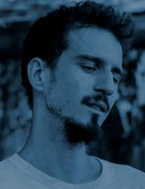

<div class="card-professor">
    
    <div class="texto-professores">
        <h2>Vitor Chaves</h2>
        <p>arquiteto e urbanista pela Faculdade de Arquitetura e Urbanismo da USP, sócio do escritório
            colaborativo Sem Muros Arquitetura Integrada, que desenvolve projetos de arquitetura de
            baixo
            impacto ambiental e design em permacultura. Possui 8 anos de em design ecológico, também com
            a
            Positiv.A Consultoria. Possui formação em Permacultura (PDC - Permaculture Design Course) no
            ano
            de
            2015.</p>
    </div>

</div>